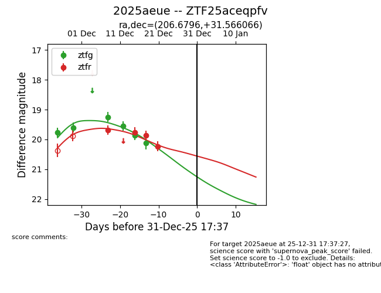
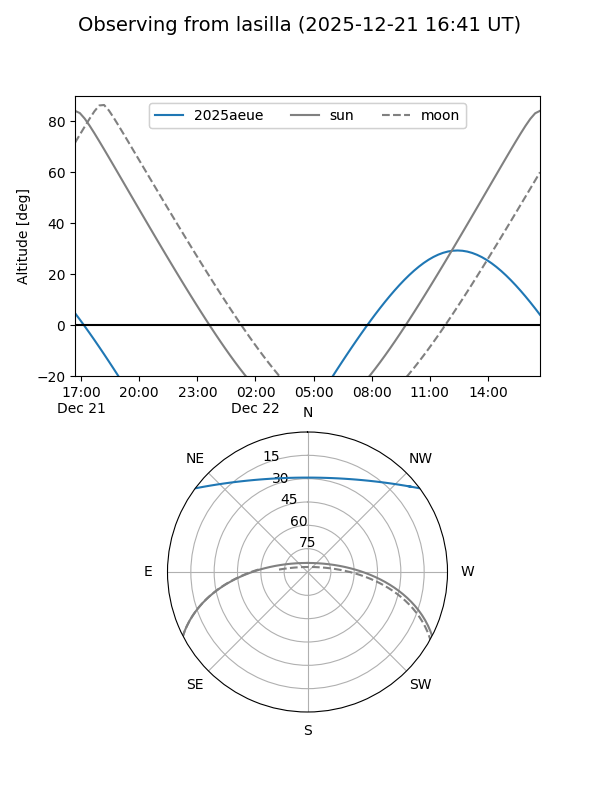
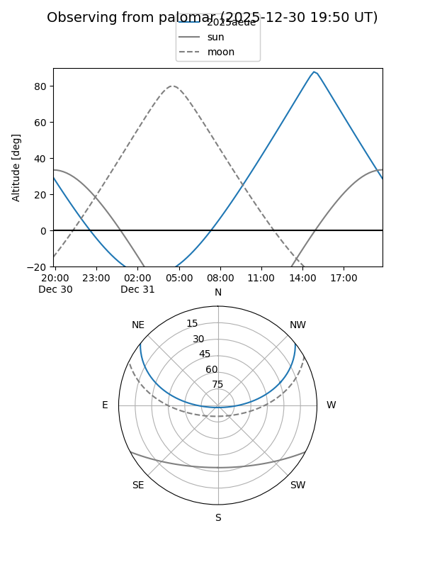
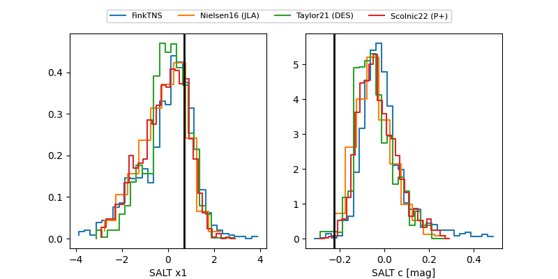

2025aeue
Target 2025aeue at 2025-12-21 14:37
Aliases and brokers:
FINK: fink-portal.org/ZTF25aceqpfv
Lasair: lasair-ztf.lsst.ac.uk/objects/ZTF25aceqpfv
ALeRCE: alerce.online/object/ZTF25aceqpfv
TNS: wis-tns.org/object/2025aeue
YSE: ziggy.ucolick.org/yse/transient_detail/2025aeue
alt names
ZTF25aceqpfv (ztf,fink_ztf)
2025aeue (tns,yse)
Coordinates:
equatorial (ra, dec) = 206.6796,+31.56607
equatorial (HMS+DMS) = 13:46:43.10,+31:33:57.84
galactic (l, b) = (56.4620,+77.17418)
Flags:
Photometry:
last ztfg=20.12, ztfr=20.23
6 ztfg, 4 ztfr detections
Lightcurve

Visibility


Additional plots
